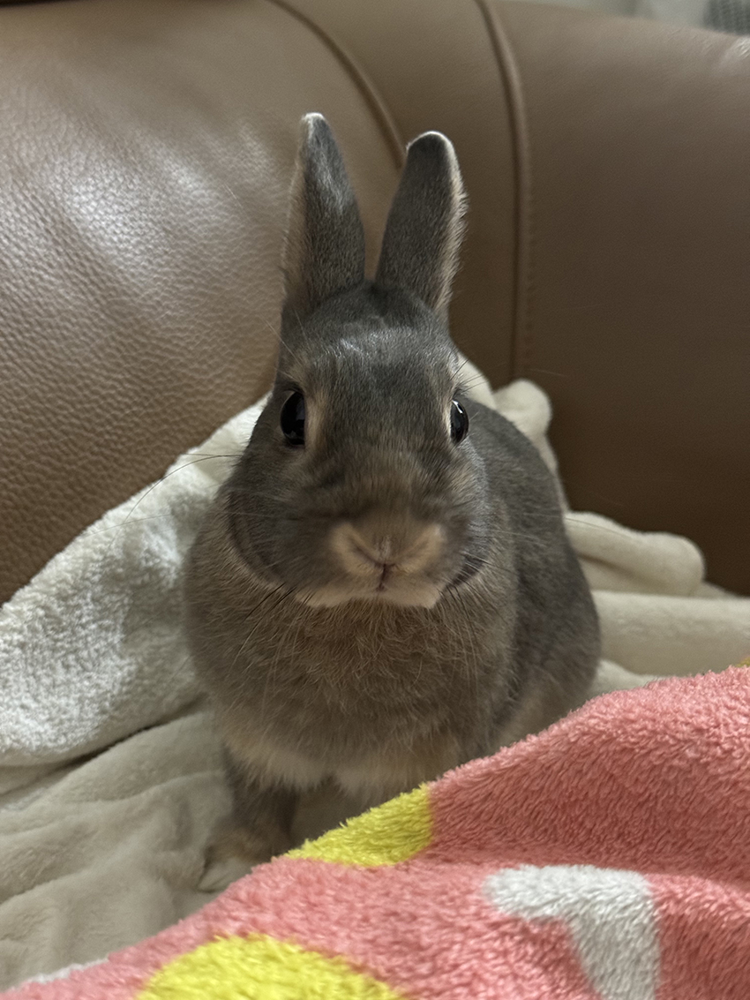
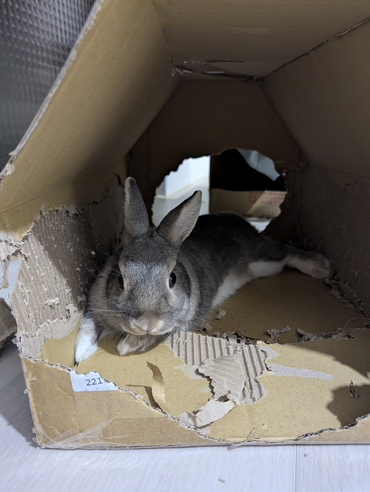
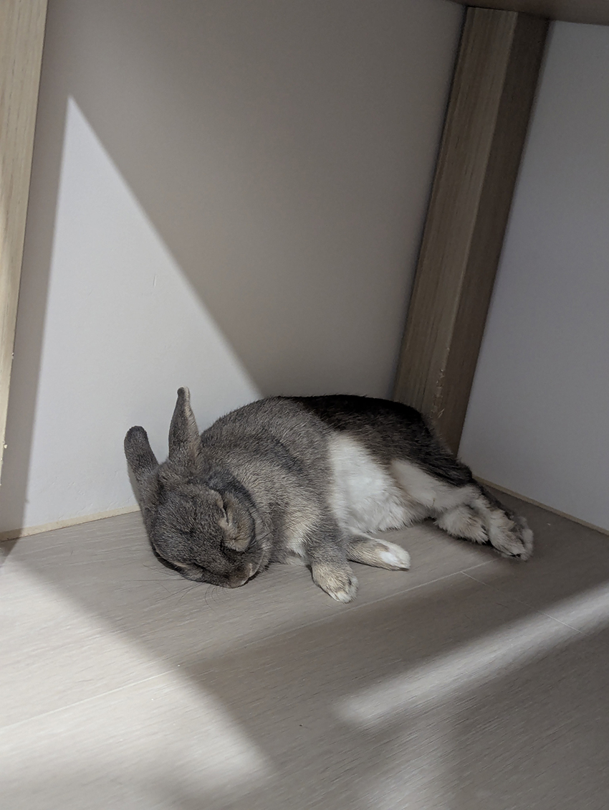

領養了一隻麻吉兔
江家慧│雲端產品硬體工程一處＼硬體設計四部
麻吉是我去年從領養平台帶回的，當時牠八個月大。剛回來的時候還瘦瘦的不太敢出籠，於是 我給牠圍了一個活動空間，足夠牠舒服地跑跳，暫時不打擾牠。牠是個聰明活潑又現實的小男生，認得零食包裝的聲音，聽到就會跑到身邊來，吃完了就趕快又跑走，也喜歡吃蘋果香蕉和各種果乾。喜歡被摸頭不喜歡被抱，像貓一樣傲嬌獨來獨往。
|  |
在養兔子前，雖然做了功課，去了解兔子習性和爬文其他飼主分享的經驗，本來以為會比飼養貓狗容易，但實際上養了之後才知道不容易。不要低估兔子的破壞力，牠喜歡到處啃，需要時刻注意，不然木門、桌腳、沙發皮都會留下牠輝煌的戰績，電器用品也會遭到攻擊。所以兔子用的草編玩具不能少，在網路上選購了很多種，但大賣場免費的紙箱是牠最喜歡的玩具。
|  |
經過幾個月的相處，現在早上牠會在門口等我幫牠開門，接著趴在落地窗邊曬日光浴，願意躺在角落閉眼休息，牠對這個家有了安全感，也讓我放心了。希望牠可以繼續長胖，健康長大！
|  |